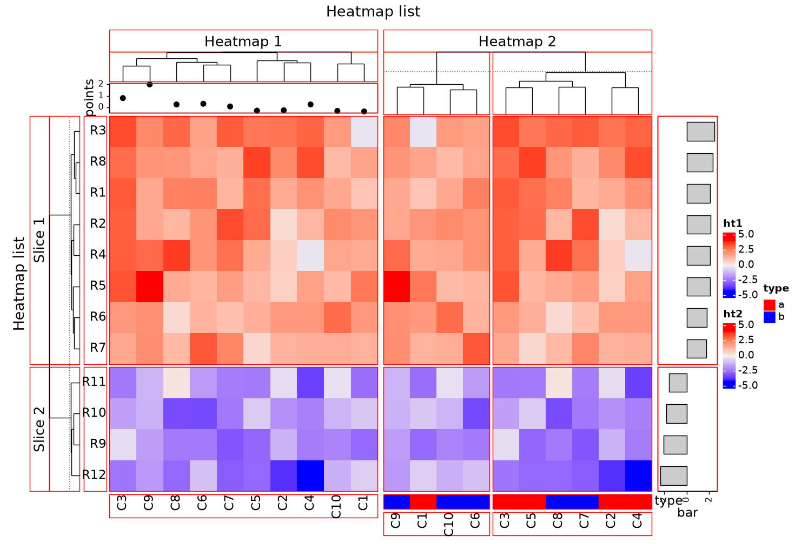
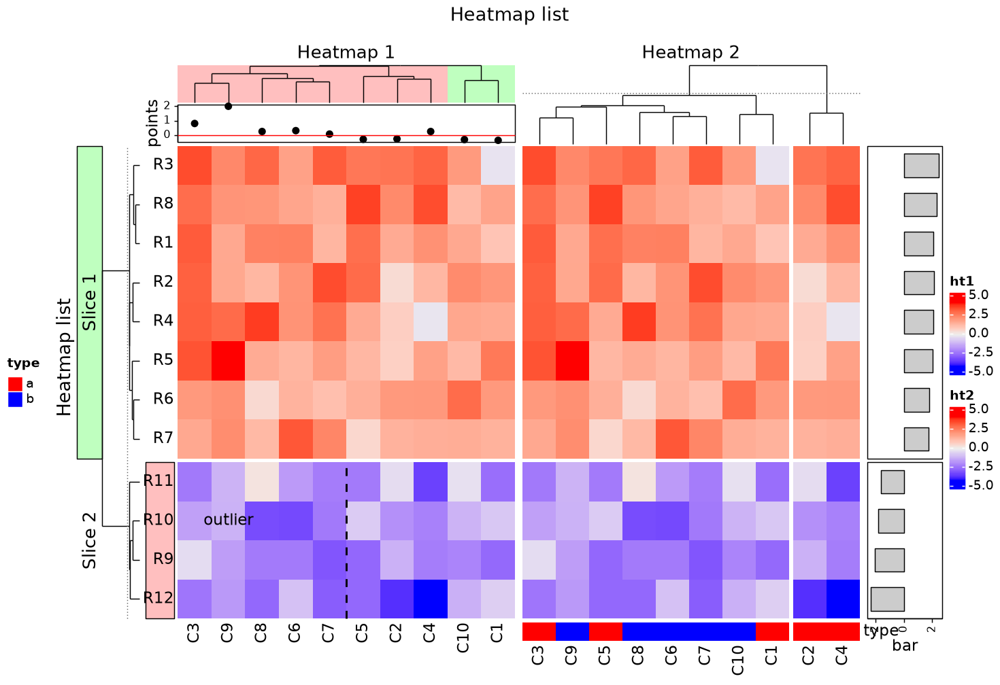
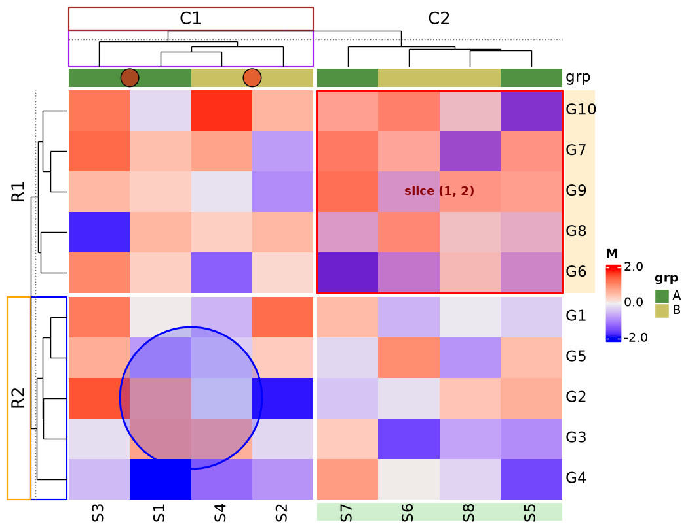
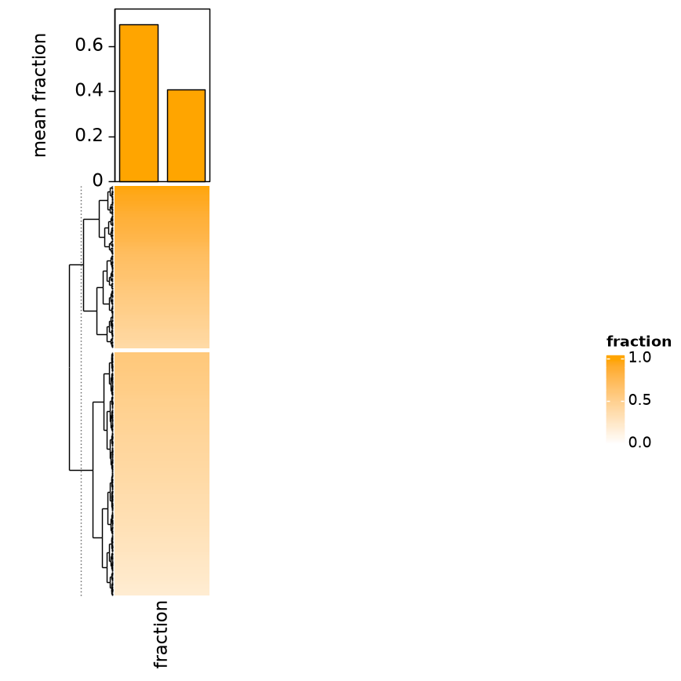

6 Heatmap Decoration#
After heatmaps and annotations are drawn, the grid viewport for every
heatmap component remains registered on the active
GridDevice, allowing you to revisit any region and overlay
additional graphics. First, let us construct a heatmap list containing
virtually every component type and inspect all registered viewport names
with list_components().
Important 1-based slice convention: Although matrix rows, columns, and indices in
ComplexHeatmap-pyare 0-based, viewport slice identifiers (slice=,row_slice=,column_slice=) inlist_components()and alldecorate_*()functions are 1-based (1, 2, ...), matching the viewport naming scheme{heatmap}_heatmap_body_{row_slice}_{column_slice}.
Saving decorated plots: Always run all
decorate_*()calls afterch.draw(...)and before saving the figure (fig.savefig(...)), or use a helper likesave_decorated(). Passingsave="out.png"directly toch.draw()writes the PNG before subsequent decorations execute.
import numpy as np
import pandas as pd
import complexheatmap as ch
from complexheatmap import (
Heatmap,
HeatmapAnnotation,
anno_barplot,
anno_points,
gpar,
grid,
list_components,
rowAnnotation,
seekViewport,
unit,
)
rng = np.random.default_rng(123)
mat = np.vstack([rng.normal(2.0, 1.0, (8, 10)), rng.normal(-2.0, 1.0, (4, 10))])
df = pd.DataFrame(
mat,
index=[f"R{i}" for i in range(1, 13)],
columns=[f"C{j}" for j in range(1, 11)],
)
ha_column1 = HeatmapAnnotation(
points=anno_points(rng.normal(0.0, 1.0, 10)),
annotation_name_side="left",
)
ht1 = Heatmap(
df,
name="ht1",
km=2,
row_title=["Slice 1", "Slice 2"],
column_title="Heatmap 1",
top_annotation=ha_column1,
row_names_side="left",
)
ha_column2 = HeatmapAnnotation(
type=["a"] * 5 + ["b"] * 5,
col={"type": {"a": "red", "b": "blue"}},
)
ht2 = Heatmap(
df,
name="ht2",
row_title="Heatmap 2",
column_title="Heatmap 2",
bottom_annotation=ha_column2,
column_km=2,
)
ht_list = ht1 + ht2 + rowAnnotation(bar=anno_barplot(df.mean(axis=1).to_numpy(), width=unit(2, "cm")))
res = ch.draw(ht_list, row_title="Heatmap list", column_title="Heatmap list")
list_components()['global', 'heatmap_list', 'ht1_heatmap_body_1_1', 'ht1_heatmap_body_2_1',
'ht1_column_title_1', 'ht1_row_title_1', 'ht1_row_title_2', 'ht1_dend_row_1',
'ht1_dend_row_2', 'ht1_dend_column_1', 'ht1_row_names_1', 'ht1_row_names_2',
'ht1_column_names_1', 'annotation_points_1', 'ht2_heatmap_body_1_1',
'ht2_heatmap_body_1_2', 'ht2_heatmap_body_2_1', 'ht2_heatmap_body_2_2',
'ht2_column_title_1', 'ht2_dend_column_1', 'ht2_dend_column_2',
'ht2_column_names_1', 'ht2_column_names_2', 'annotation_type_1',
'annotation_type_2', 'annotation_bar_1', 'annotation_bar_2',
'global_column_title_top', 'global_row_title_left']We can visit each named component viewport with
seekViewport() and outline it in red:
comps = list_components()
for hm_name in ("ht1", "ht2"):
for i in (1, 2):
vp = f"{hm_name}_heatmap_body_{i}_1"
if vp in comps:
seekViewport(vp)
grid.rect(gp=gpar(fill=None, col="red"))
if hm_name == "ht1":
seekViewport(f"{hm_name}_row_names_{i}")
grid.rect(gp=gpar(fill=None, col="red"))
seekViewport(f"{hm_name}_column_title_1")
grid.rect(gp=gpar(fill=None, col="red"))
seekViewport(f"{hm_name}_dend_column_1")
grid.rect(gp=gpar(fill=None, col="red"))
seekViewport(f"{hm_name}_column_names_1")
grid.rect(gp=gpar(fill=None, col="red"))
for vp in (
"ht2_heatmap_body_1_2", "ht2_heatmap_body_2_2",
"ht2_dend_column_2", "ht2_column_names_2",
"ht1_dend_row_1", "ht1_dend_row_2",
"ht1_row_title_1", "ht1_row_title_2",
"annotation_points_1", "annotation_type_1", "annotation_type_2",
"annotation_bar_1", "annotation_bar_2",
):
seekViewport(vp)
grid.rect(gp=gpar(fill=None, col="red"))
Every red box above can be revisited cleanly using the
decorate_*() helpers described next.
6.1 Decoration functions#
While seekViewport() works with raw viewport names from
list_components(), ComplexHeatmap-py provides
friendly decorate_*() functions that accept either a
with context manager, a callable (lambda), or
a @decorator:
decorate_heatmap_body(heatmap, code=None, slice=1, row_slice=None, column_slice=1)decorate_annotation(annotation, code=None, slice=1)decorate_dend(heatmap, code=None, slice=1, which="column")decorate_title(heatmap, code=None, slice=1, which="column")decorate_dimnames(heatmap, code=None, slice=1, which="column")decorate_row_names()— shortcut fordecorate_dimnames(..., which="row")decorate_column_names()— shortcut fordecorate_dimnames(..., which="column")decorate_row_dend()— shortcut fordecorate_dend(..., which="row")decorate_column_dend()— shortcut fordecorate_dend(..., which="column")decorate_row_title()— shortcut fordecorate_title(..., which="row")decorate_column_title()— shortcut fordecorate_title(..., which="column")
Among these, decorate_heatmap_body() and
decorate_annotation() are the most frequently used.
Remember that slice, row_slice, and
column_slice are 1-based integers
(1 for the first slice, 2 for the second,
etc.).
In the example below, we decorate the second row slice of
ht1, highlight two sub-clusters under ht1’s
column dendrogram, shade row names and row titles, and draw a zero
reference line inside the points annotation:
from complexheatmap import (
column_dend,
cutree,
decorate_annotation,
decorate_column_dend,
decorate_heatmap_body,
decorate_row_names,
decorate_row_title,
order_dendrogram,
)
res = ch.draw(
ht_list,
row_title="Heatmap list",
column_title="Heatmap list",
heatmap_legend_side="right",
annotation_legend_side="left",
)
with decorate_heatmap_body("ht1", slice=2):
grid.text("outlier", 1.5 / 10.0, 2.5 / 4.0, default_units="npc")
grid.lines([0.5, 0.5], [0.0, 1.0], gp=gpar(lty=2, lwd=2))
with decorate_column_dend("ht1"):
tree = column_dend(res)["ht1"]
cl = cutree(tree, k=2)
od = order_dendrogram(tree)
ind = cl[od]
n_col = len(ind)
x1 = [int(np.where(ind == k_id)[0][0]) for k_id in (1, 2)]
x2 = [int(np.where(ind == k_id)[0][-1]) + 1 for k_id in (1, 2)]
grid.rect(
x=[v / n_col for v in x1],
width=[(b - a) / n_col for a, b in zip(x1, x2)],
just="left",
default_units="npc",
gp=gpar(fill=["#FF000040", "#00FF0040"], col=None),
)
with decorate_row_names("ht1", slice=2):
grid.rect(gp=gpar(fill="#FF000040"))
with decorate_row_title("ht1", slice=1):
grid.rect(gp=gpar(fill="#00FF0040"))
with decorate_annotation("points"):
grid.lines([0, 1], unit([0, 0], "native"), gp=gpar(col="red"))
For annotations created with anno_points(),
anno_barplot(), and anno_boxplot(), the
annotation viewport retains the data scale so "native"
y-coordinates (or x-coordinates for row annotations) work directly
inside decorate_annotation().
When a heatmap is split along both rows and columns, use
row_slice and column_slice (1-based) in
decorate_heatmap_body(), alongside
decorate_dend(), decorate_dimnames(),
decorate_title(), and their directional shortcuts:
from complexheatmap import (
decorate_column_names,
decorate_column_title,
decorate_dend,
decorate_dimnames,
decorate_row_dend,
decorate_title,
)
rng_s = np.random.default_rng(11)
mat_s = pd.DataFrame(
rng_s.standard_normal((10, 8)),
index=[f"G{i}" for i in range(1, 11)],
columns=[f"S{j}" for j in range(1, 9)],
)
ht_s = Heatmap(
mat_s,
name="M",
row_split=["R1"] * 5 + ["R2"] * 5,
column_split=["C1"] * 4 + ["C2"] * 4,
row_title=["R1", "R2"],
column_title=["C1", "C2"],
top_annotation=HeatmapAnnotation(grp=["A", "B"] * 4),
)
ch.draw(ht_s)
with decorate_heatmap_body("M", row_slice=1, column_slice=2):
grid.rect(gp=gpar(fill="#FF000030", col="red", lwd=2))
grid.text("slice (1, 2)", gp=gpar(col="darkred", fontsize=9, fontface="bold"))
with decorate_heatmap_body("M", row_slice=2, column_slice=1):
grid.circle(r=unit(0.35, "snpc"), gp=gpar(fill="#0000FF30", col="blue", lwd=2))
with decorate_row_dend("M", slice=2):
grid.rect(gp=gpar(col="blue", lwd=1.5, fill=None))
with decorate_dend("M", which="column", slice=1):
grid.rect(gp=gpar(col="purple", lwd=1.5, fill=None))
with decorate_column_names("M", slice=2):
grid.rect(gp=gpar(fill="#00AA0030", col=None))
with decorate_dimnames("M", which="row", slice=1):
grid.rect(gp=gpar(fill="#FFAA0030", col=None))
with decorate_column_title("M", slice=1):
grid.rect(gp=gpar(col="brown", lwd=1.5, fill=None))
with decorate_title("M", which="row", slice=2):
grid.rect(gp=gpar(col="orange", lwd=1.5, fill=None))
with decorate_annotation("grp", slice=1):
grid.circle(x=unit([0.25, 0.75], "npc"), gp=gpar(fill="#FF000080"))
6.2 Examples#
6.2.1 Barplot for single-column heatmap#
In Heatmap Annotations,
anno_summary() automatically summarizes a single-column
heatmap as stacked proportion bars (discrete) or boxplots (continuous).
Here we build a custom weighted summary barplot on top of a continuous
single-column heatmap.
Suppose we have a set of differentially methylated regions (DMRs) and
a single-column heatmap showing the fraction of each DMR covered by
genes (between 0 and 1). Denoting region width as w and overlap
fraction as p, we want to display the width-weighted mean
overlap fraction sum(w * p) / sum(w) for each row group on
top of the heatmap.
We allocate an empty top region with anno_empty(), draw
the split heatmap, extract the 0-based slice row indices with
row_order(), and draw the bars, y-axis, and axis label
inside decorate_annotation("barplot"):
from complexheatmap import anno_empty, colorRamp2, generateRandomBed, popViewport, pushViewport, row_order, viewport
rng_d = np.random.default_rng(123)
bed = generateRandomBed(nr=1000, nc=0, seed=123)
frac = np.concatenate([rng_d.uniform(0.4, 1.0, 400), rng_d.uniform(0.2, 0.6, len(bed) - 400)])
col_fun = colorRamp2([0, 1], ["white", "orange"])
split = ["group1"] * 400 + ["group2"] * (len(bed) - 400)
ht_dmr = Heatmap(
frac,
name="fraction",
col=col_fun,
width=unit(2.2, "cm"),
top_annotation=HeatmapAnnotation(barplot=anno_empty(height=unit(4, "cm"))),
)
ht_dmr_drawn = ch.draw(ht_dmr, row_split=split, padding=unit([2, 16, 2, 2], "mm"))
ro = row_order(ht_dmr_drawn)
w = (bed["end"] - bed["start"]).to_numpy()
p = [float(np.sum(w[idx] * frac[idx]) / np.sum(w[idx])) for idx in ro]
with decorate_annotation("barplot"):
pushViewport(viewport(xscale=(0.5, 2.5), yscale=(0.0, max(p) * 1.1)))
grid.rect(
x=[1, 2],
y=0,
width=0.8,
height=p,
just="bottom",
gp=gpar(fill="orange"),
default_units="native",
)
grid.yaxis()
grid.text("mean fraction", x=unit(-1.5, "cm"), rot=90, just="bottom")
popViewport()
6.2.2 Add titles for row annotations#
Row annotations concatenated horizontally to a heatmap do not have
built-in top titles. Allocate extra top space with padding
in draw(), then place text just above each component using
y=unit(1, "npc") + unit(2, "mm"):
from complexheatmap import anno_boxplot
rng_t = np.random.default_rng(42)
ht_titles = (
Heatmap(rng_t.standard_normal((10, 10)), name="mat", show_column_dend=False)
+ rowAnnotation(foo=anno_barplot(np.arange(1, 11), width=unit(4, "cm")))
+ rowAnnotation(bar=anno_boxplot(rng_t.standard_normal((10, 10)), width=unit(4, "cm")))
)
ch.draw(ht_titles, padding=unit([10, 2, 10, 2], "mm"))
with decorate_annotation("foo"):
grid.text("title for barplot", y=unit(1, "npc") + unit(2, "mm"), just="bottom")
with decorate_annotation("bar"):
grid.text("title for boxplot", y=unit(1, "npc") + unit(2, "mm"), just="bottom")
with decorate_heatmap_body("mat"):
grid.text("title for the heatmap", y=unit(1, "npc") + unit(2, "mm"), just="bottom")
This pattern is also used for multi-panel summary dashboards in Other High-level Plots.
6.2.3 Other possible use of decorations#
Additional real-world decoration patterns appear throughout the book:
- Adding quantile reference lines on
densityHeatmap()in Other High-level Plots. - Grouping annotations with bracket lines and adding custom text overlays in More Examples.